Renzhi Jing
Sustainability Data Scientist, Google
Research Consultant, UNICEF Evaluation Office
I am a climate scientist and data scientist working at the intersection of climate change, natural hazards, and population health. My research combines statistical modeling, machine learning, and geospatial analysis to quantify tropical cyclone risk in a changing climate and its consequences for health, education, and economic well-being — particularly in low- and middle-income countries.
Before joining Google, I was a postdoctoral researcher in the Department of Health Policy at Stanford University, working with Eran Bendavid on climate change and population health. I received my Ph.D. in Natural Hazard and Risk Analysis from Princeton University, where my thesis on the statistical modeling of tropical cyclone climatology led to a patent licensed to climate risk modeling companies. I hold a B.S. in Atmospheric Physics and a B.A. in Chinese Language and Literature from Peking University.
Research Interests
-
Tropical cyclones & climate change
Statistical and machine-learning models of tropical cyclone genesis, tracks, and intensity, and how storm risk shifts in a warming climate.
-
Climate impacts on people
Who is exposed to extreme weather worldwide, and what it costs in infant mortality, schooling, and economic outcomes.
-
Natural disaster risk assessment
Turning hazard science into risk estimates that inform health policy, infrastructure resilience, and climate adaptation.
Publications
2026
-
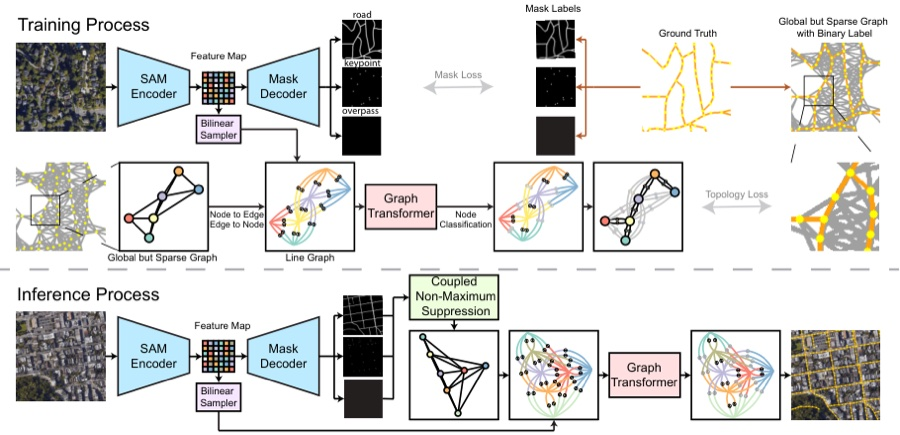
ECCVLineGraph2Road: Structural graph reasoning on line graphs for road network extraction
European Conference on Computer Vision (ECCV), 2026
-
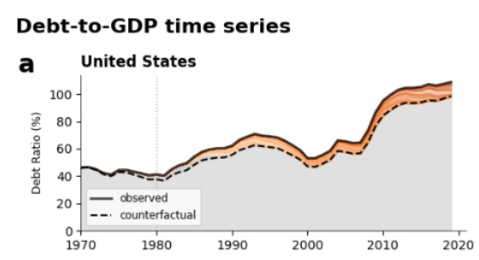
PNASThe debt burden of tropical cyclones and climate change
Proceedings of the National Academy of Sciences
2025
-
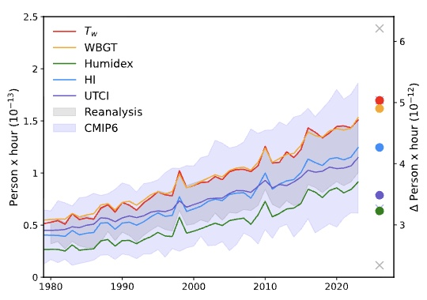
GRLSpatial patterns of historical changes in human heat stress disagree across metrics
Geophysical Research Letters, 2025
-
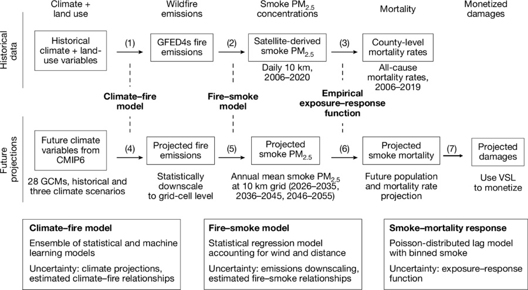
NatureWildfire smoke exposure and mortality burden in the USA under climate change
Nature 647, 935–943, 2025
-
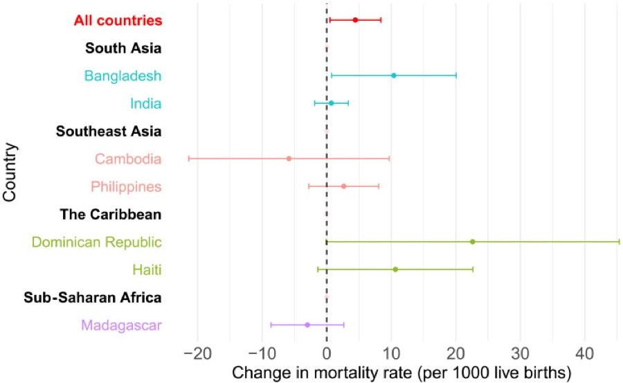
Science AdvancesThe impact of tropical cyclone exposure on infant mortality in low- and middle-income countries
Science Advances 11 (21), eadt9640, 2025
-
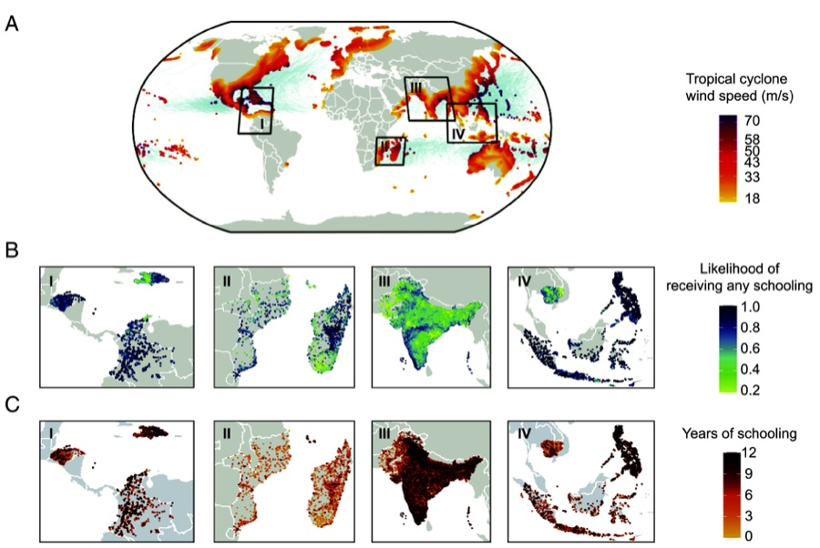
Proceedings of the National Academy of Sciences 122 (18), e2413962122, 2025
2024
-
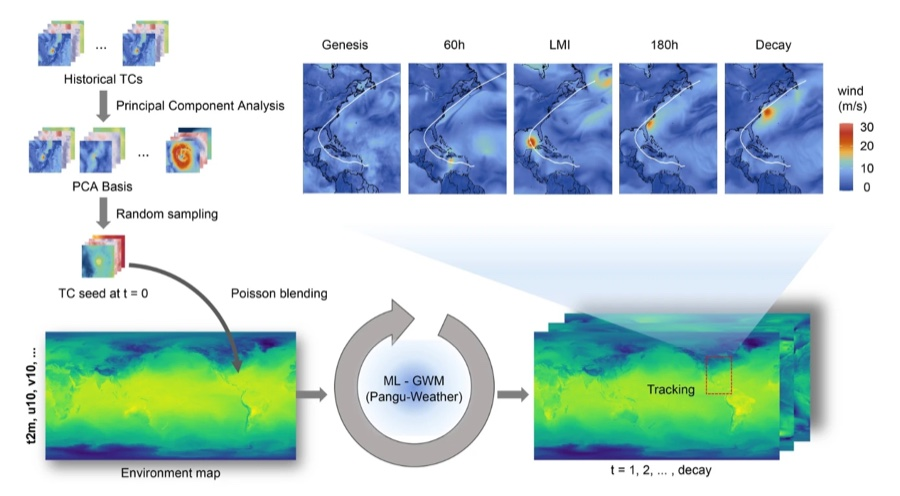
Journal of Advances in Modeling Earth Systems 16, e2023MS004203, 2024
-
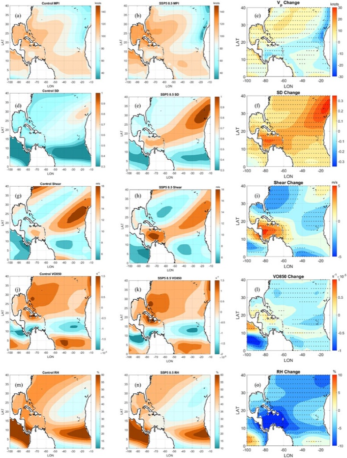
2023
-
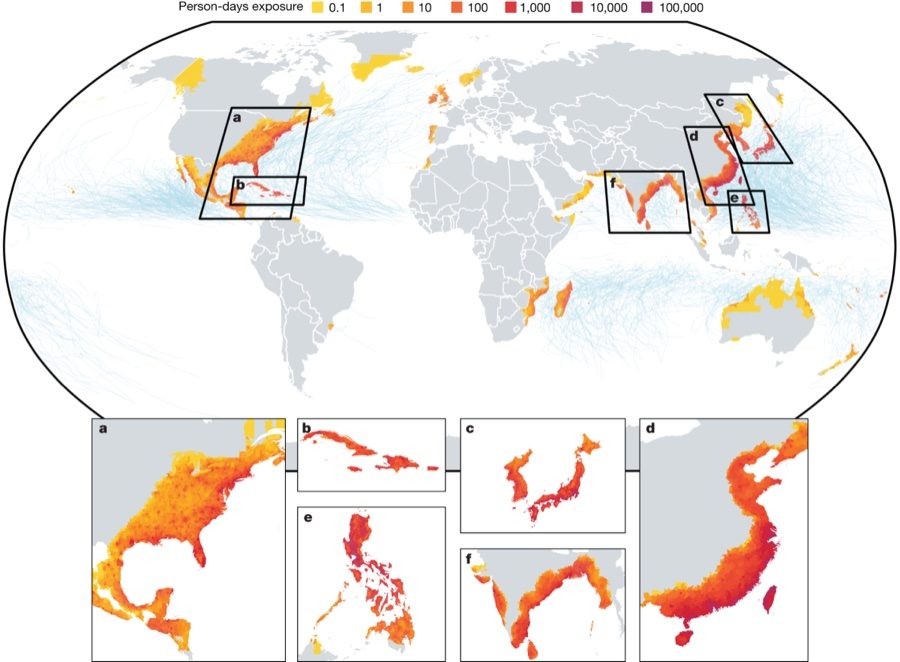
NatureGlobal population profile of tropical cyclone exposure from 2002 to 2019
Nature, 2023
2022
-
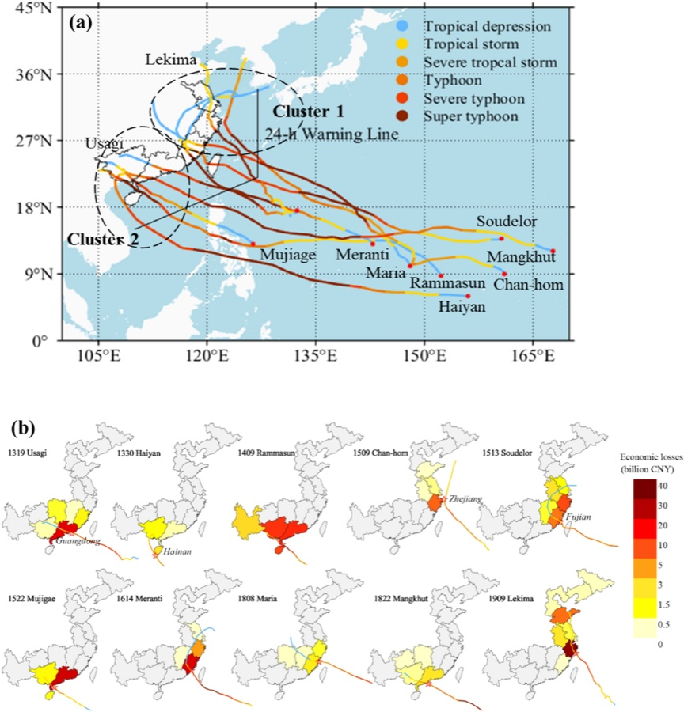
Scientific ReportsIncreasing typhoon impact and economic losses due to anthropogenic warming in Southeast China
Scientific Reports 12 (1), 14048, 2022
-
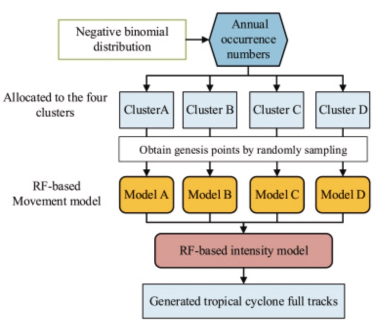
JWEIATropical cyclone full track simulation in the western North Pacific based on random forests
Journal of Wind Engineering and Industrial Aerodynamics 228, 105119, 2022
2021
-
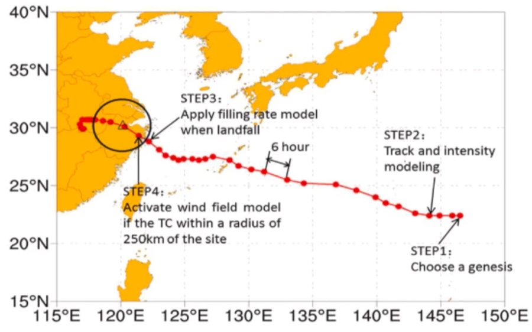
JWEIATyphoon wind hazard estimation by full-track simulation with various wind intensity models
Journal of Wind Engineering and Industrial Aerodynamics 218, 104792, 2021
-
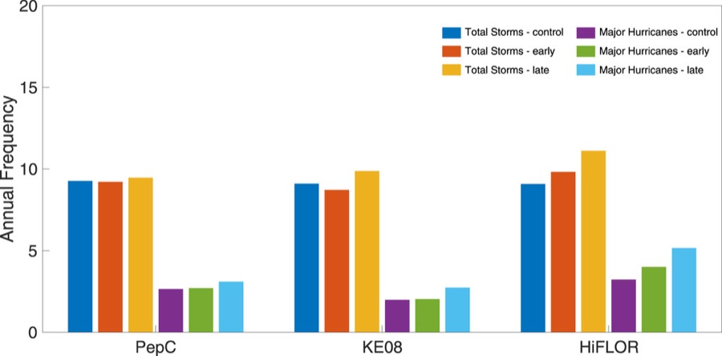
Journal of Climate 34 (23), 9349–9364, 2021
2020
-
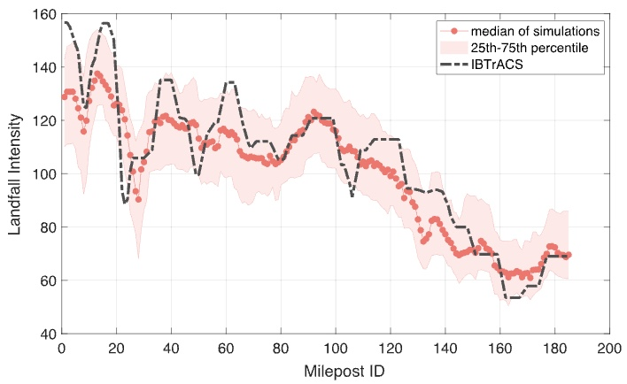
JAMESAn environment-dependent probabilistic tropical cyclone model
Journal of Advances in Modeling Earth Systems 12 (3), e2019MS001975, 2020
2019
-
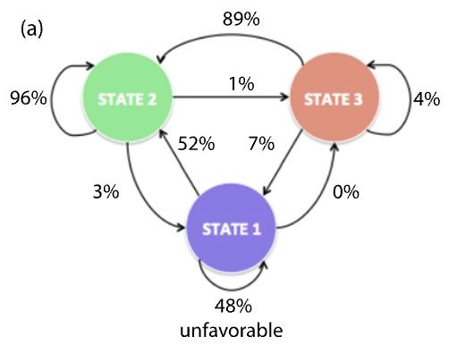
J. ClimateTropical cyclone intensity evolution modeled as a dependent hidden Markov process
Journal of Climate 32 (22), 7837–7855, 2019
2017
-
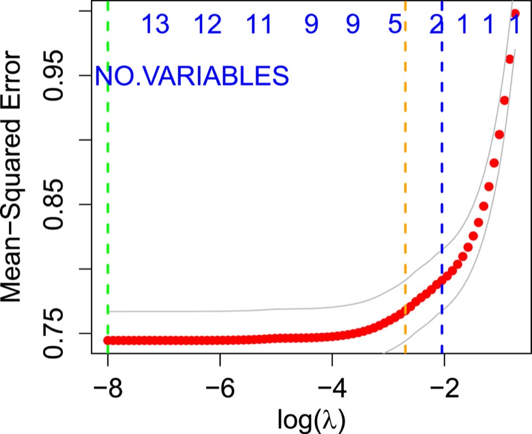
Monthly Weather ReviewA statistical investigation of the dependence of tropical cyclone intensity change on the surrounding environment
Monthly Weather Review 145 (7), 2813–2831, 2017
Patent
- Ning Lin and Renzhi Jing. “System and method for environment-dependent probabilistic tropical cyclone modeling.” U.S. Patent Application 17/629,581, filed August 25, 2022. Licensed to One Concern, Jupiter Intelligence, and BP.